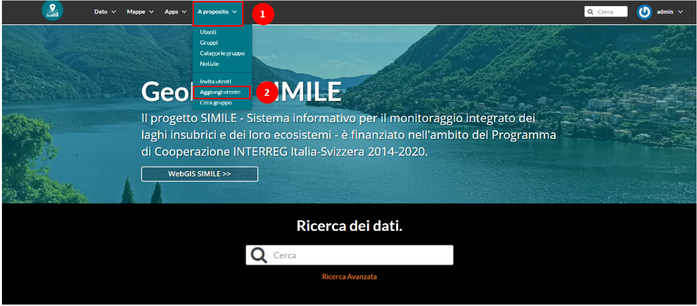
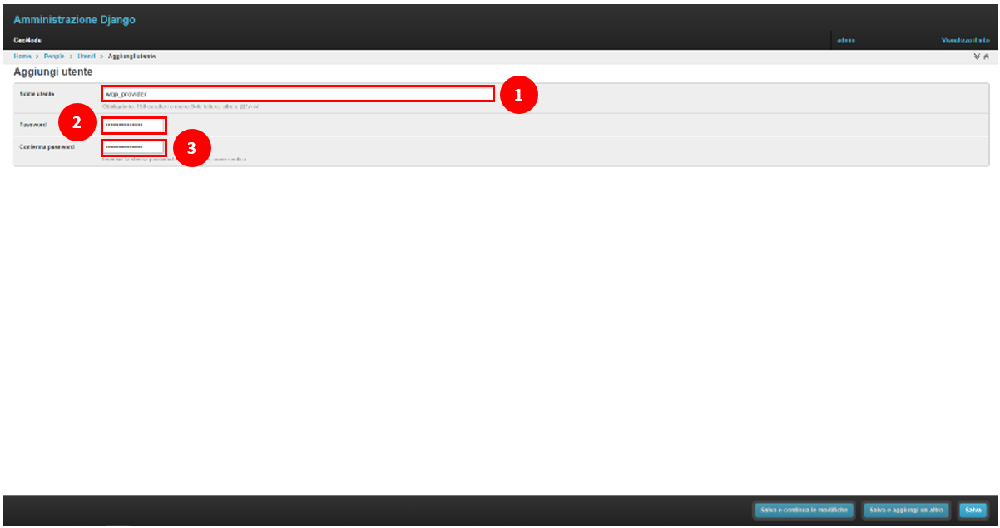
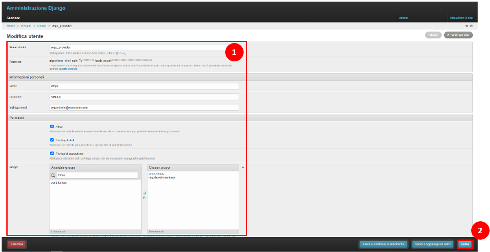
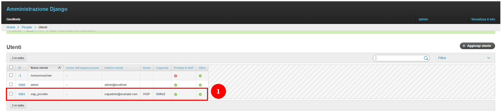
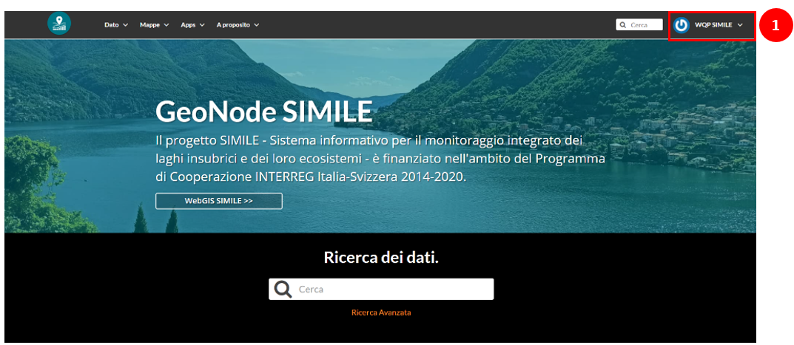
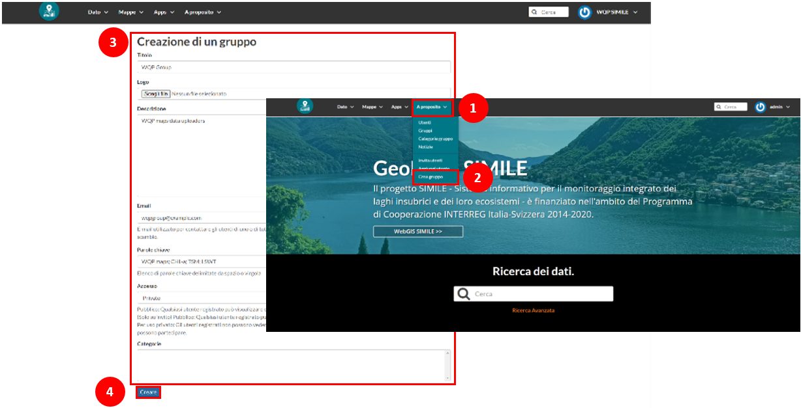
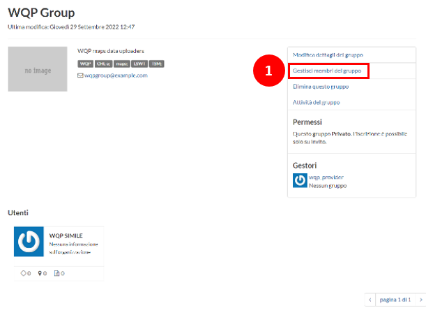
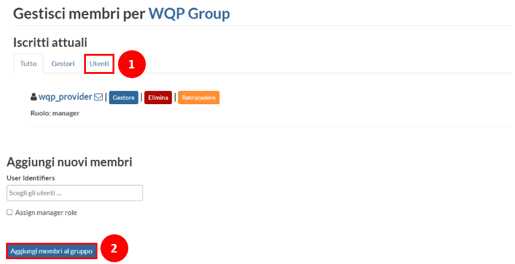
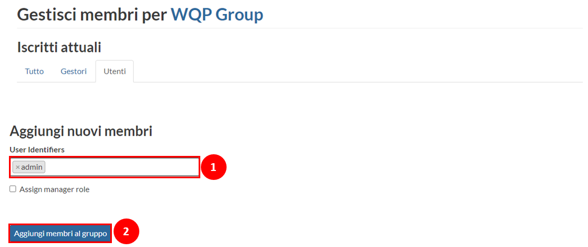
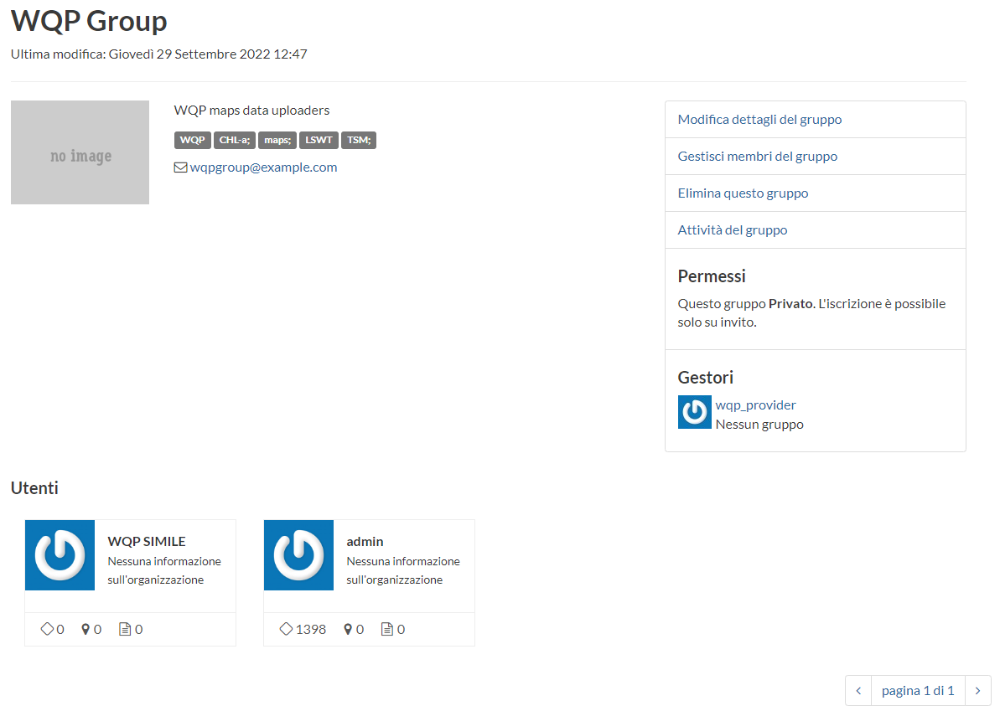

Manage Users and Groups
Contents
Manage Users and Groups#
On this page, you will find the steps to take advantage of the Django administrative dashboard to create new users on the platform and add them to new groups. Within this process, you will become familiar with creating new groups.
Note
Remember to log in to the platform as an administrative user for the upcoming steps.
Add/Modify/Remove Users#
On the top menu, open the About item and select the Add User option. The option will redirect you to GeoNode’s administrative dashboard.
{kind=link}

Fig. 29 Add new user#
In the page presented in Fig. 30, the user must input the credentials for the new user and then Save.
{kind=link}

Fig. 30 New user credentials#
With the new user’s credentials defined, the next step involves assigning the corresponding user’s contact information and permissions. After compiling the requested information, click on Save.
Hint
Active: If the user is considered active in the platform (without the need to eliminate, if inactive)
Staff privileges: If the user can access the administrative dashboard
Superuser privileges: Assign all the rights for managing the dashboard
{kind=link}

Fig. 31 Edit user permisions and personal information#
After storing the user, it will appear in the list of existing users on the platform. To head back to the main webpage, click View Site (at the top right of the screen).
{kind=link}

Fig. 32 List of available users in the platform#
Now, it is possible to test the new user by exiting the current session and logging in again with the credentials set for the new user.
{kind=link}

Fig. 33 Access the platform using the new user#
Add/Modify/Remove Groups#
Similarly, to the addition of a new user, enter the About menu and select Create Group (see Fig. 34), which leads you to the Group Creation page. Complete the information about the group and select Create.
{kind=link}

Fig. 34 Create a new group#
Following the new group creation will prompt its page (see Fig. 35). Notice that the group has an existing member (corresponding to the creator of the group).
{kind=link}

Fig. 35 New group created#
From the group page, Figure 35, it is possible to manage the associated users. Select Manage group members to reach the page for managing the group members (Fig. 36.
{kind=link}

Fig. 36 Group’s management#
For adding a new group member, it is sufficient to query them in the search bar, select them and click on add member to the group.
Note
Please pay attention to the different actions available for managing each user; they can be defined as Manager, Removed or Demoted.
{kind=link}

Fig. 37 Add new group members#
Once the new user makes part of the group, the Group page will contain its information (see Fig. 38).
{kind=link}

Fig. 38 Verification of new group member#